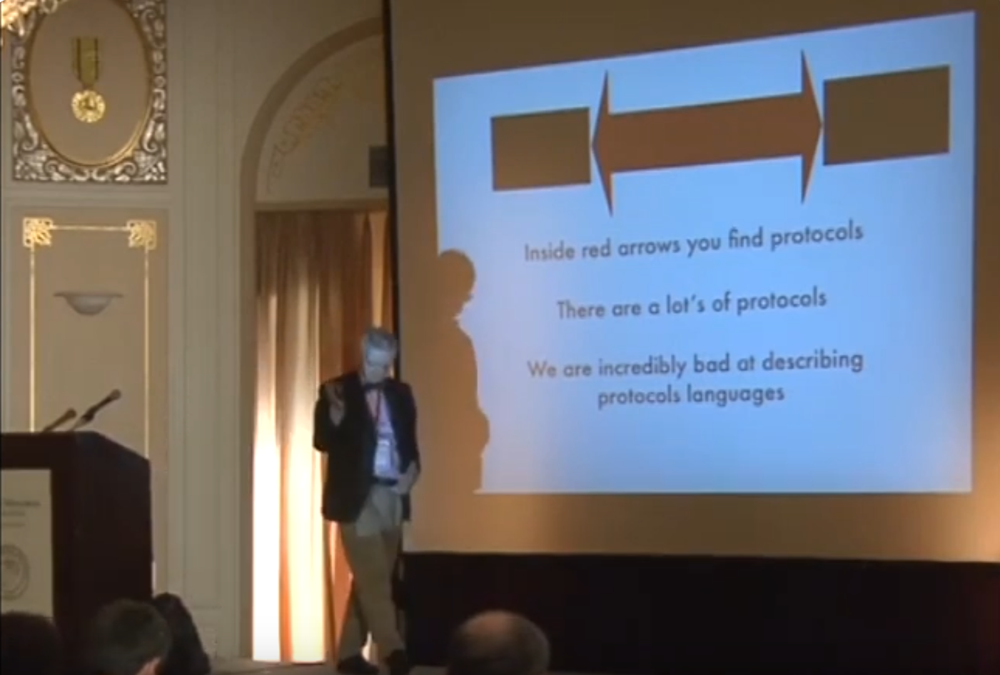

The motivation behind Spex
Work in progress
Whenever a new (programming) language is proposed, the first question that comes to most peoples' minds is: do we really need yet another language?
In order to properly answer this question and thus motivate why we need Spex, we need to first cover what a specification language is, how they are different from programming languages, and what they are useful for.
What is a "specification language"?
In a lecture, back in 2010, Joe Armstrong said:
"We need languages to describe encodings and protocols not machine instructions"
He then went on to elaborate saying that we have plenty (too many) programming languages (e.g. C, Java, Go, Python, Erlang, etc) which at a high-level allow us to manipulate machines via machine instructions (and syscalls). However we only have a few specification languages which describe encodings and protocols, i.e. describe what's going on between two, or more, machines!
In a later talk (2013) Joe has the following slide:

Where the black boxes are written using programming languages while the big red arrow between is what Joe means with encodings and protocols. It's this big red arrow which is what we need different languages for, and to distinguish them from "normal" programming languages, we shall call them specification languages.
Spex tries to be such a specification language.
The difference between APIs, encoding and protocols
Before we can start talking about the shortcomings of current specification languages, it's helpful to first break down Joe's red arrow. It actually has three components:
- The interface of the blackbox (the API), i.e. what messages the component accepts;
- The encoding of the messages, i.e. what bytes (or bits) are sent over the communication channel;
- The protocol, i.e. what sequences of messages are allowed.
Hopefully it's clear what encodings are (e.g. UTF-8 encoded JSON or binary Protobuf messages), but it might be worth pondering the difference between APIs and protocols.
In the latter of the above mentioned talks, Joe gives an example where merely knowing the API isn't good enough. The example he gives is the POSIX filesystem API:
open: takes a filepath and returns a file descriptor;write: takes a file descriptor and string and returns how many bytes it successfully wrote;close: takes a file descriptor and closes it, thus freeing up resources.
Nothing in the API says, for example, that we can't continue writing to a file descriptor that has been closed! This is where protocols come in, saying for example that we can only write to a file descritor that is open, etc.
One last point to note is that APIs can be synchronous or asynchronous, as in the client of the API gets a response back immediately upon making the call or it (potentially) gets the response sometime in the future.
What are the problems with past approaches?
Now that we've established the differences between APIs, encodings and protocols, we can start talking about where the current specification languages fall short.
Choose two out of three
The first thing to note is that very few specification languages support specifying all three aspects. For example:
- OpenAPI specifications: describe synchronous APIs, the encoding can
affected by the content-type, e.g.
application/json,application/xmlorapplication/x-www-form-urlencoded, but there's no way to specify protocols; - Protobuf: only specifies message encodings. Together with gRPC it can be used to specify APIs also, but it cannot be used to specify protocols;
- JSON schema: can be used to disallow JSON messages that don't conform to some schema, but again say something about which sequences of messages are allowed.
On the other side of the fence, we have things like session types which support specifications of APIs and protocols, but don't talk about encodings.
There's one exception which supports specifying all three aspects and that's Joe's Universal Binary Format (2002), it seems to have been largely forgotten about though.
- Syntax for specifing sync and async APIs?
- gRPC can do this, but again only for gRPC systems...
- https://www.asyncapi.com/en
Syntax and tooling
In addition to the aspets of what you can specify, it's also important to consider how pleasant it's to read and write such specifications and what you can do with them -- i.e. what tooling is available once we have a specification.
Ultimately the low use of specification languages must at least somewhat be a reflection of the fact that specifications are not worth the effort?
A key factor in this equation is the risk of the specification and the system being specified getting out of sync, i.e. either the specification changes and the corresponding change isn't done in the system or vice versa, which significantly devalues the specification effort.
There are two strategies that existing solutions use:
- Test for conformity between the specification and the system;
- Generate code from the specification, thus ensuring correctness by construction.
For example, OpenAPI specifications can be used as basis for testing using third-party tooling, while gRPC with Protobuf takes the latter approach.
There's an obvious advantage in the correct-by-construction approach in that no testing is needed, but there's also a less obvious downside: it doesn't make sense to use Protobuf to specify an already existing (legacy) system.
Why would one want to specify an existing system? There could be many reasons:
- To document the system and have tooling which generates documentation from the specification;
- To use the specification as a blueprint for a rewrite, i.e. specify the old system, test it the specification agains the old system to ensure it's correct, then use the specification to develop the new system, potentially generating code from the specification, and finally testing the new system against the specification to ensure that it behaves like the old system;
- To increase the test coverage of the system by deriving tests from the specification;
- To derive a mock from the specification which can be used in contract tests.
Ok that was a lot about tooling, let's just finish off on a lighter note by talking about syntax.
OpenAPI specifications are written in JSON or YAML, which verbose and hard to read. Just like the world is slowly realsing that these formats are bad for configuration, due to not being well-specified and lacking abstraction abilities, it seems that slowly people are realising that for the same reasons JSON or YAML are also bad specification languages.
Earlier this year (2024) Microsoft released their specification language TypeSpec, which introduces a sane syntax inspired by TypeScript. It seems that they didn't release any tooling on their own and instead seem to rely on translating into OpenAPI specifications and using their tooling.
Property-based testing
We've talked about specification languages and using tooling to test that the system they intend to specify indeed behaves according to the specification.
At this point it's also worth mentioning the relationship to property-based testing.
When property-based testing is used to do blackbox testing of a stateful API, then the property is a specification. Given that every programming language has its own slightly different implementation property-based testing, this means that we have (at least) one specification language per programming language.
Since these property-based specifications are basically eDSLs (embedded domain-specific language) which change when the libraries change, the tooling for such specifications is almost non-existant (except for the testing of a specification against a system).
Furthermore these eDSL specifications will have the idiosyncrasies of their host-languages, making them hard to read and write by people who don't know the host-language (or programming more generally).
What the Spex specification language tries to do different
Let's split this section into short and long term plans. The short term plans are either partially implemented already, or there's a clear idea how to implement them. The longer term plans on the other hand are a bit more open ended.
Short term
Given our above analysis, there are a couple of obvious things that we'd like to have in Spex:
- A sane syntax with good error messages;
- A versatile toolkit, containing at least:
- A verifier, which can test that some system respects some specification;
- Generate a prototype implementation from a specification, so that you can demo your idea or hand of a working server HTTP API to the frontend team before the actual backend is done (without risking that there will be a mismatch in the end, since the real backend is tested against the same specification as the prototype is derived from);
- Ability to import and export OpenAPI/Swagger, Protobuf, etc. Think of how Pandoc can covert between text formats, perhaps we can do the same between specifications;
- Lua templating (again similar to Pandoc) which enables code generation from specifications or the minimal test cases that the verifer produces.
This would bring Spex on par with existing solutions, especially considering one can always export to OpenAPI and use their tooling as a fallback option.
However, as we already hinted at above, we can addition fix some shortcomings by:
- Allowing for more complete specifications, than OpenAPI, by having syntax for both synchronous and asynchronous APIs;
- Adding syntax for specifying protocols, i.e. valid sequences of API calls, thereby addressing Joe's critisism;
- A contract checker, i.e. a component/proxy which sits between two component and checks that they follow the protocol at run-time, again inspired by Joe's work.
By being a language rather than merely a specification format, it make sense to also provide:
- A REPL, which allows you to explore a system using a specification. Tab completion is provided for the API and random payload data is generated on the fly;
- A time traveling debugger which enables you to step forwards and backwards through a sequence of API calls, in order to explore how the system evolves over time.
Taking a language rather than format centric approach also makes it easier to provide unified tooling that coevolves with the syntax, e.g.:
- Refinement types -- validation logic;
- Model definitions -- fakes rather than mocks and better fuzzing;
- BNF syntax for describing context-free grammars -- and generators that can use this to generate structured data;
- Literate Spex -- to make it easier to embed specifiations and the output that can be produced from them straight into documentation itself.
It's hard to imagine what trying to add these things to e.g. OpenAPI even would look like, given that it doesn't have it's own syntax.
With this future functionality we hope to get to the point where there's a clear benefit to writing specifications!
Long term
Given how few specification languages there are, as Joe pointed out, there's plenty of design choices to be made. Longer term it would be interesting to explore some of this design space.
Here are some ideas of possible syntax and tooling extensions:
- OpenAPI and Protobuf describe the interface of one machine, but what
about the topology? I.e. which machine talks to which machine? These
more complete system specifications open up the potential for other
kinds of tooling:
- Linters that ensures global consistancy;
- More complete documentation with diagrams for visualising how components are connected;
- Generation of deployment related code;
- Load testing.
- We can also imagine being able to specify human-to-machine interfaces, such as CLIs and GUIs, in addition to the machine-to-machine APIs that we've already discussed;
- Can we partially solve the problem of all property-based specifications in different programming languages all have different formats and no shared tooling?
- Protobuf is an example of an interface description language (IDL), it lets you define interfaces using predefined types that Protobuf provides a predefined way of serialising those types into binary which can be sent over the network or saved to disk. What if we wanted to specify our own binary format? Perhaps we want to use some compression method that is particular to our problem domain. Allowing specification of binary formats in general would be interesting to look at;
- Ultimately it would be interesting to try to specify Spex in Spex itself. It would be difficult to make this a completely formal specification that can't drift apart from the implementation, but it would be interesting to see how far one can get.
Conclusion
Hopefully by now the following should be clear:
- What specification languages are and how they are different from programming languages;
- That existing specification languages leave a lot to be desired;
- How Spex is trying to fix the current pain points.
If you find what we've discussed compelling, then feel free to:
If you got questions, suggestions for improvements or have any disagreement with anything we've discussed, come join our chat.
Let's try to make specifications more useful!